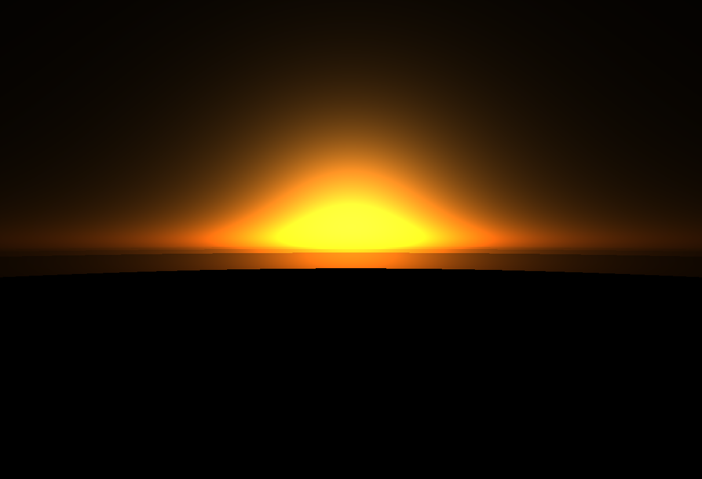

CS184/284A Spring 2025 Final Project Checkpoint Write-Up
Link to webpage: https://kilowatt.github.io/cs184/final/checkpoint.html
Link to GitHub repository: https://github.com/kilowatt/you-are-my-sunshine
Link to Slides: https://docs.google.com/presentation/d/1boYm0oVVnuwGY99kWB0qonKicNZ33P7kDJEDJFEE0ew/edit?usp=sharing
Link to Video: https://drive.google.com/file/d/1zJf5GekGrx9mQf4TkkHC2XPlRq84uIlA/view?usp=sharing
Overview
This is our milestone website for the final project, You Are My Sunshine: Sunset Simulator.Summary of Progress
We deep-dived into the math and physics behind sunsets, including how the sunlight is scattered in the atmosphere. We read many articles and papers to get a deeper knowledge of the subject.
We decided to use ShaderToy as the platform for us to create our sunset simulator. Using ShaderToy, we implemented our basic sunset simulator that implements Rayleigh Scattering and Mie Scattering, giving us our desired goals for the milestone.
Our project has been progressing according to plan, as we planned to achieve a basic sunset simulator, and we have achieved exactly that. We will proceed as planned to the next steps, refining our sunset simulator and researching how to add other things to the simulator (ie. different atmospheric parameters or objects like clouds)

|

|

|